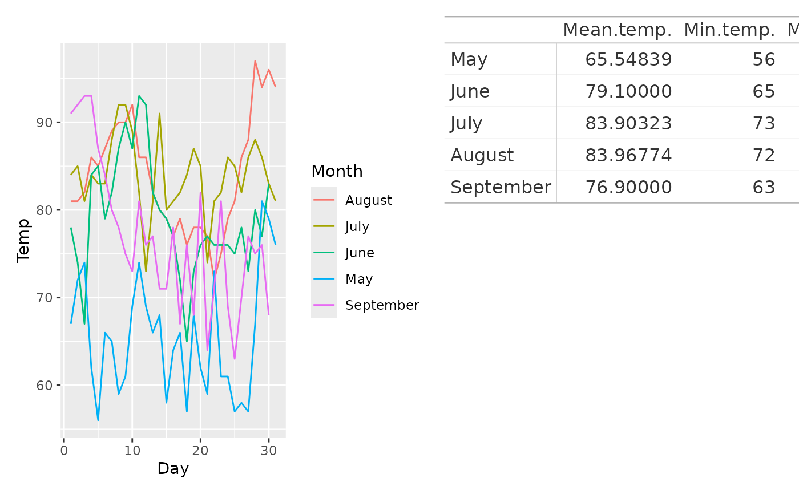

This function works much like wrap_elements() in that it turns the input
into patchwork compliant objects that can be added to a composition. However,
wrap_table() uses the knowledge that the input is a table to provide some
very nifty layout options that makes it generally better to use than
wrap_elements() for this type of object.
Arguments
- table
A gt table or an object coercible to a data frame
- panel
what portion of the table should be aligned with the panel region?
"body"means that any column and row headers will be placed outside the panel region, i.e. the topleft corner of the panel region will be aligned with the topleft data cell."full"means that the whole table will be placed inside the panel region."rows"means that all rows (including column headers) will be placed inside the panel region but row headers will be placed to the left."cols"is the opposite, placing all columns within the panel region but keeping the column header on top of it. If this is set to"body"or"cols"andspaceis set to"fixed"or"free_x"then any footnotes or source notes in the table will be placed outside the bottom of the panel region.- space
How should the dimension of the table influence the final composition?
"fixed"means that the table width will set the width of the column it occupies and the table height will set the height of the row it occupies."free"is the opposite meaning that the table dimension will not have any influence on the sizing."free_x"and"free_y"allows you to free either direction while keeping the remaining fixed. Do note that if you set a specific width or height inplot_layout()it will have higher priority than the table dimensions- ignore_tag
Should tags be ignored for this patch. This is relevant when using automatic tagging of plots and the content of the patch does not qualify for a tag.
Examples
library(ggplot2)
library(gt)
p1 <- ggplot(airquality) +
geom_line(aes(x = Day, y = Temp, colour = month.name[Month])) +
labs(colour = "Month")
table <- data.frame(
Month = month.name[5:9],
"Mean temp." = tapply(airquality$Temp, airquality$Month, mean),
"Min temp." = tapply(airquality$Temp, airquality$Month, min),
"Max temp." = tapply(airquality$Temp, airquality$Month, max)
)
gt_tab <- gt(table, rowname_col = "Month")
# Default addition usees wrap_table
p1 + gt_tab

# Default places column and row headers outside panel area. Use wrap_table
# to control this
p1 + wrap_table(gt_tab, panel = "full")
# Tables generally have fixed dimensions and these can be used to control
# the size of the area they occupy
p2 <- ggplot(airquality) +
geom_boxplot(aes(y = month.name[Month], x = Temp)) +
scale_y_discrete(name = NULL, limits = month.name[9:5], guide = "none")
wrap_table(gt_tab, space = "fixed") + p2